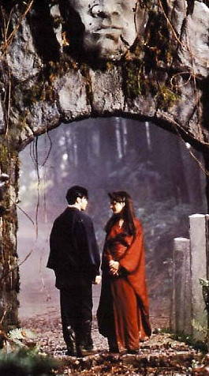

Le texte qui va suivre est un petit clin d’oeuil à un magazine que seuls les plus vieux d’entre-vous doivent connaître (et encore): “Abus dangereux” et un hommage à tous ceux qui se sont retrouvés sans inspiration devant leur clavier alors qu’ils avaient un article à écrire pour le lendemain.
Bon, alors ici devait se trouver un truc qu’on n’a pas pu placer, alors à la place d’une page blanche, on s’est dit qu’il valait mieux remplir cette place libre par quelque chose et comme on n’a rien trouvé c’est à moi qu’a été donné le travail de boucher cette page blanche. Il y a plusieurs manières de remplir une page, la plus simple consiste à mettre une image, belle de préférence, comme ceci :

Mais, bon ca ce voit un peut trop qu’on essaye de combler un blanc. L’autre manière de remplir une page consiste à écrire
en grand.
Mais c’est un peu trop voyant aussi. On peut également écrire de longues phrases qui n’ont aucun sens mais qui permettent de remplir avec rapidité, facilement et sans se fatiguer une page sans pour cela écrire des choses compliqués qui de toute façon n’intéresseront personne vu que je doute qu’il y ait beaucoup de monde à lire ceci car je ne l’ai pas mentionné dans le sommaire (page 03) de cet excellent fanzine qu’est Lost Eden (20 francs, pas cher, en effet en supposant que vous mettez 2 bonnes heures à lire Lost Eden, cela fait quand même 10F l’heure ; ce qui est encore moins cher que le cinéma avec 20F/Heure ou moins cher une K7 vidéo avec 70F/Heure, c’est le moyen le plus économique de s’amuser), fanzine que vous devez absolument recommander à vos amis, proches, voisins, familles soit dit en passant, donc, comme je le disais quelques lignes plus haut dans la même phrase, pour gagner de la place il faut écrire, écrire et encore écrire de longues phrases avec plein de propositions relatives, conjonctions de subordinations, compléments d’objet direct, compléments d’objet indirect, propositions indépendantes, propositions subordonnées complétives, propositions subordonnées infinitives, propositions subordonnées relatives déterminatives, d’adverbe (comme vivement, rapidement, grossièrement, lentement etc. ), d’adjectif (comme rouge, rapide, jeune, grand, gros, etc.) et j’en passe et des meilleurs.
On peut également faire des répétitions répétitions répétitions répétitions répétitions répétitions répétitions répétitions répétitions répétitions répétitions répétitions répétitions répétitions répétitions répétitions répétitions répétitions répétitions répétitions répétitions répétitions répétitions répétitions.
On peut également compter jusqu’à 100 comme ceci : 0 1 2 3 4 5 6 7 8 9 10 11 12 13 14 15 16 17 18 19 20 21 22 23 24 25 26 27 28 29 30 31 32 33 34 35 36 37 39 40 41 42 43 44 45 46 47 48 49 50 51 52 53 54 55 56 57 58 59 60 61 62 63 64 65 66 67 68 69 70 71 72 73 74 75 76 77 78 79 80 81 82 83 84 85 86 87 88 89 90 91 92 93 94 95 96 97 98 99 100 (petit jeu : trouver le nombre qui manque).
Là, je n’ai plus d’idée et je ne sais pas comment je vais réussir à terminer cette page. Vite, vite, il faut que je trouve une idée pour remplir les quelques lignes qui restent.
Je pourrais peut-être vous raconter une blague : - Quand est-ce qu’un parachutiste aveugle sait qu’il vas toucher le sol ? - Quand il y a du mou dans la laisse du chien. Ouf… Cela fait 2 lignes de gagné (pas mal non). Je pourrais également répéter la même lettre n n n n n n n n n n n n n n n n n n n n n n n n n n n n n n n n n n n n n n n n n n n n n n n n n n n n n n n n n n n n n n n n n n n n n n n n n n n n n n n.
Vite plus qu’une phrase, ça y est je vais réussir à finir cette page qui je vous rappelle devait être blanche mais comme cela ne on ne voulait pas de page blanche (à part le verso de la première de couverture, du à des problèmes techniques); voilà, le calvaire (pour vous et pour moi) est fini… plus que quelques mots… C’est fini !!!
PS : Vous voyez, avec ce PS j’ai réussi à terminer de remplir la page…


![MANGA : [mãηga] n.m. Bande dessinée japonaise](assets/images/posts/1998/manga_thumbnail.jpg)